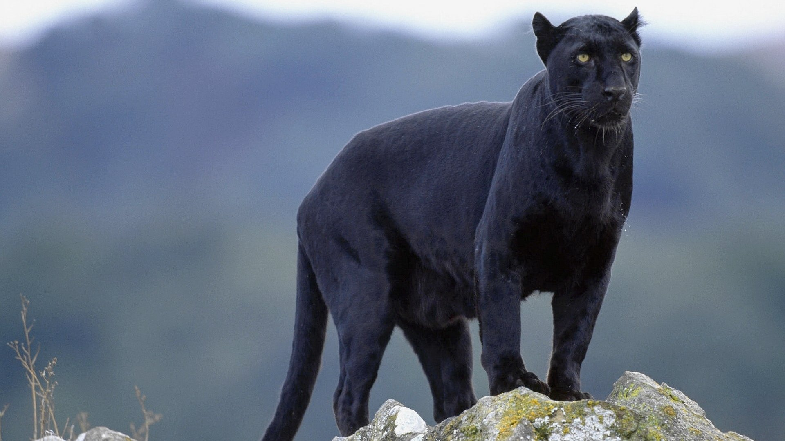

The black jaguar is actually exactly the same as a regular jaguar except for its coloring; it's not a different species, or kind, of jaguar.
Some jaguars get genes that cause them to have melanism, which means that they will have fur that is all black. About six in every 100 jaguars will be all black.
The word 'jaguar' comes from the indigenous word 'yaguar', which means 'he who kills with one leap'.
Jaguars used to be found from south-west USA, throughout South America to almost the far north in Argentina. Now, they’ve been virtually eliminated from half of their historic range. The jaguars’ stronghold is in Brazil – it may hold around half of the estimated 170,000 wild jaguars.
Unlike many domestic cats, jaguars don’t avoid water. They often live near lakes, rivers and wetlands, and are confident swimmers, known to cross large rivers.